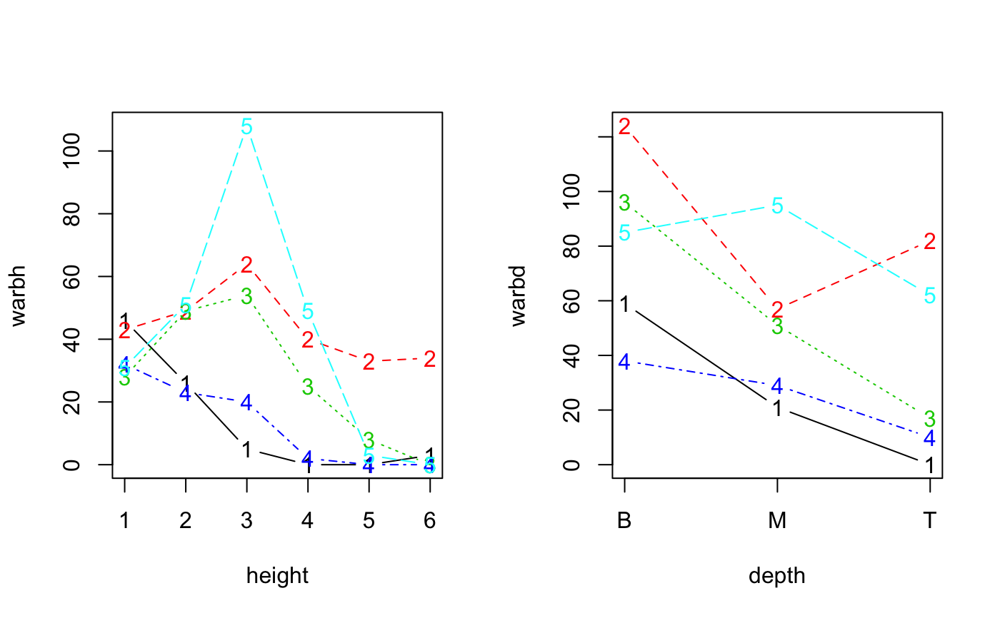

warblers.RdFive species of warblers were studied to determine the factors controlling the species abundances and competition (MacArthur 1958).
data("warblers")
A list with 3 elements: xtab is a list of sample x species matrices
(sec_prc: percentages of total number of seconds of observations,
num_prc: percentages of total number of observations in seconds,
sec_cnt: counts based on percentages and totals of seconds,
num_cnt: counts based on percentages and totals),
samp is a data frame with sample level attributes such as height
(6 is the base, 1 is the top of trees, most trees were 50--60 feet tall)
and depth of branches in the canopy
(B: bare or lichen- covered base, M: middle zone of old needles,
T: terminal zone of new, less than 1.5 years old, needles or buds) ,
taxa is a data frame with scientific and common names for the species.
MacArthur 1958.
MacArthur, R. H., 1958. Population ecology of some warblers of northeastern coniferous forests. Ecology 39:599--619. <doi:10.2307/1931600>
#> List of 3 #> $ xtab:List of 4 #> ..$ sec_prc: num [1:16, 1:5] 43.8 13.8 0 21.3 11.2 0 5 1.2 0 0 ... #> .. ..- attr(*, "dimnames")=List of 2 #> .. .. ..$ : chr [1:16] "B1" "M1" "T1" "B2" ... #> .. .. ..$ : chr [1:5] "CMWA" "YRWA" "BTNW" "BLBW" ... #> ..$ num_prc: num [1:16, 1:5] 43.8 13.8 0 21.3 11.2 0 5 1.2 0 0 ... #> .. ..- attr(*, "dimnames")=List of 2 #> .. .. ..$ : chr [1:16] "B1" "M1" "T1" "B2" ... #> .. .. ..$ : chr [1:5] "CMWA" "YRWA" "BTNW" "BLBW" ... #> ..$ sec_cnt: int [1:16, 1:5] 1292 342 0 533 215 0 104 13 0 0 ... #> .. ..- attr(*, "dimnames")=List of 2 #> .. .. ..$ : chr [1:16] "B1" "M1" "T1" "B2" ... #> .. .. ..$ : chr [1:5] "CMWA" "YRWA" "BTNW" "BLBW" ... #> ..$ num_cnt: int [1:16, 1:5] 35 11 0 17 9 0 4 1 0 0 ... #> .. ..- attr(*, "dimnames")=List of 2 #> .. .. ..$ : chr [1:16] "B1" "M1" "T1" "B2" ... #> .. .. ..$ : chr [1:5] "CMWA" "YRWA" "BTNW" "BLBW" ... #> $ samp:'data.frame': 16 obs. of 3 variables: #> ..$ zone : Factor w/ 16 levels "B1","M1","T1",..: 1 2 3 4 5 6 7 8 9 10 ... #> ..$ height: int [1:16] 1 1 1 2 2 2 3 3 3 4 ... #> ..$ depth : Factor w/ 3 levels "B","M","T": 1 2 3 1 2 3 1 2 3 1 ... #> $ taxa:'data.frame': 5 obs. of 2 variables: #> ..$ scientific: Factor w/ 5 levels "Setophaga castanea",..: 4 2 5 3 1 #> ..$ common : Factor w/ 5 levels "Bay-breasted Warbler",..: 4 5 2 3 1warbh <- mefa4::groupSums(warblers$xtab$num_cnt, 1, warblers$samp$height) warbd <- mefa4::groupSums(warblers$xtab$num_cnt, 1, warblers$samp$depth) op <- par(mfrow=c(1,2)) matplot(rownames(warbh), warbh, type="b", xlab="height") matplot(warbd, type="b", axes=FALSE, xlab="depth")box()axis(2)par(op)